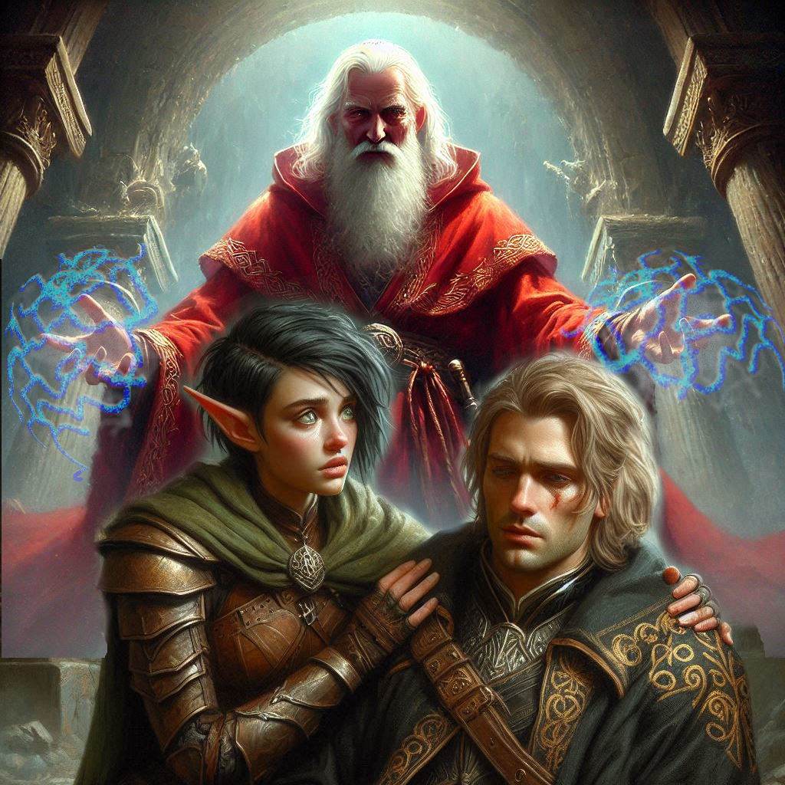
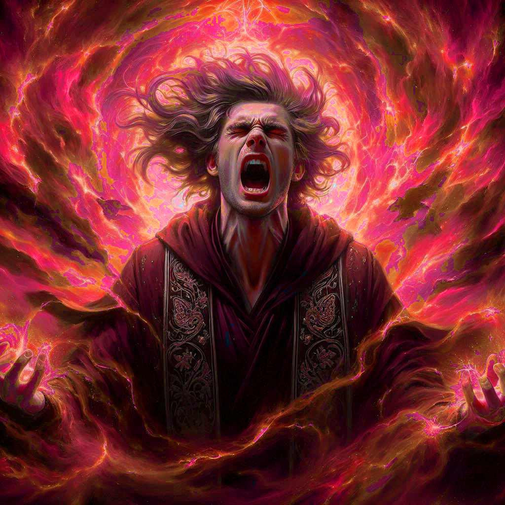
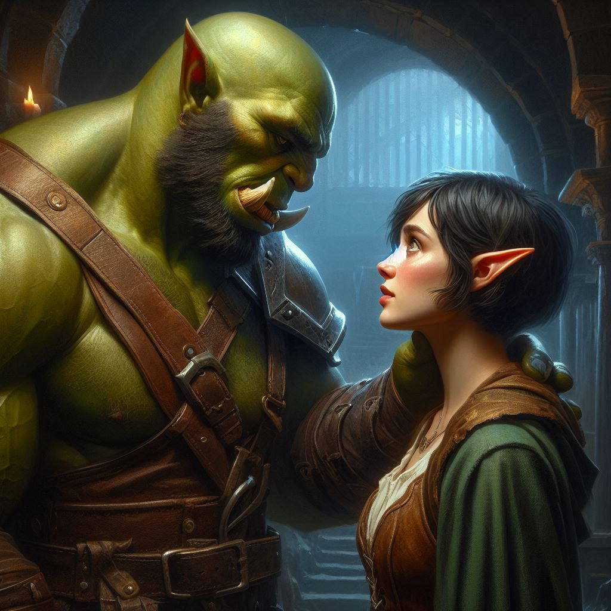
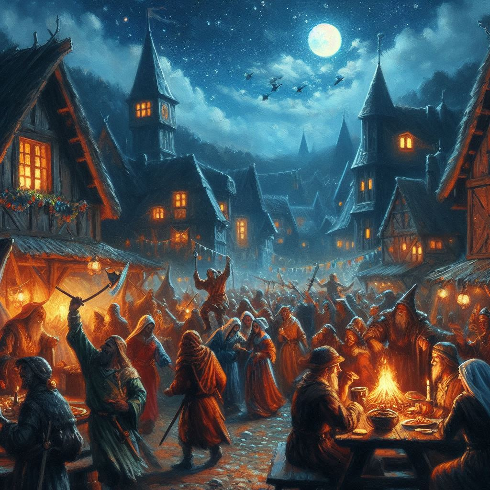

A Bitter Farewell
You stand in the crumbling temple at the heart of the dark fortress in Umbra'Thal, the air thick with the scent of ash and blood. Onyx's sacrifice is still fresh in your mind, his final breath snatched by the demon Yaldaboath, sealing the portal to the underworld. His true identity as the Archon Adonais revealed only at the last moment, his sacrifice burned into your memory like a brand.
The fortress shakes beneath your feet, stone and shadow threatening to consume the world you’ve fought so hard to protect. Varis is gone—defeated. Yet, victory feels hollow. You look at Elias, his face darkened with grief.. The loss of Onyx weighs heavily on both of you.
But your gaze drifts to the figure in the shadows—Jorsh, your childhood love, the rogue sorcerer who betrayed everything you once believed in. His eyes meet yours, filled with the familiar torment of a man torn between revenge and redemption. For a moment, time seems to stop. The cavern's tremors, the danger, everything fades away.
"Come with me," Jorsh says, his voice low, pleading. "Together, we can finish this. We can end the threat of Yaldaboath forever."
You feel the weight of his words pull at your heart, the memories of your shared past flashing before you. But it’s not enough. Too much has changed. Too much has been broken. You feel Elias watching you, tension crackling between you like a drawn bowstring. You want to believe Jorsh can change, but the darkness surrounding him is too great. And your heart knows what you have to do.
“I can’t,” you whisper, the words bitter on your tongue. “I can’t follow you down this path.”
Jorsh’s eyes harden. “You still don’t understand, do you? This isn’t about me. This is about everything—about saving Belladonna, about stopping Varis, about ending the war.”
You shake your head, your resolve tightening like armor around your chest. “It’s not my war anymore, Jorsh. You chose your path, and I have to choose mine.”
To your left, an explosion of rocks and debris fly across the chamber in a shockwave of power. You shield your head with your arms as Varis emerges from a pile of stones where one of the portals collapsed moments before. Enraged, the evil dark elf unleashes a fury of black energy toward you. Pinned up against a fallen boulder, all you can do is watch as the snakelike tendrils of power sizzle through the air on a collision course with your exposed throat.
You are about to close your eyes and accept your fate when Jorsh jumps in front of you, taking the full brunt of Varis’s hex. The impact of the dark power blasts Jorsh backwards. He hits the ground hard and slides to a stop next to your side. His eyes stare vacantly through half closed lids, dazed or dead… you’re not sure. Varis, flanked by dark elf warriors, strides toward you with renewed confidence.
“Little half-elf,” he sneers. “Heiress to the throne of Umbra’Thal. Too bad you’ll die here next to your pathetic friend. Forgotten by time as I ascend the throne.”
“I don’t know what you’re talking about, you filthy traitor,” you pant, your breath coming in ragged gasps due to what you expect is a broken rib or two.
“You’re the orphaned daughter of the late Queen Asharune,” Varis smiles cruelly. “I killed your mother and her disgusting human husband almost two decades ago. I would have taken the throne then if that wretched dwarf and meddling half-orc hadn’t ambushed me and taken you away. But I found you. I lured you here. And you will die with your pathetic human mage. He thought he could save you by learning dark magic. What a fool.”
You reach out feebly and take Jorsh’s limp fingers in your hand. If only you had known this back then. You feel a tear roll down your swollen cheek. “I’m sorry, Jorsh,” you say. “I should have believed in you.”
“Yes. Pity,” Varis says, raising his hands. “And now you both die.” He begins reciting an incantation as tendrils of electricity begin building around his hands, dancing from finger to finger before the lethal bolts consume you and Jorsh. The energy builds into two horrible globes of power around Varis’s hand and shoots toward you.
“Reflectus Aetherus Maximullendra,” Jorsh whispers, his fingers gripping your hand tightly.
The lighting bolts hit you and rebound like a stone skipping across a smooth pond. Sparks spray the temple walls around you as bolts of raw energy take out the dark elf warriors on both sides of Varis. The dark elf prince is singed badly, but he rolls to the ground and raises to his knees with a look of pure surprise in his manic eyes.
“Jorsh!” You squeeze his hand even tighter and help him sit up. “I was wrong! Can you forgive my anger?”
His jaw clenches, and for a moment, you think he might lash out. But then his expression softens, the fire in his eyes dimming. “I never stopped loving you, Kira,” he says quietly. “But I see now that this… this was never our fate.”
“I’ve been a fool,” you lament.
“The portal is crumbling. Get your friend Elias and get back to Belladonna while you can,” Jorsh wheezes. “I’ll finish Varis.”
“No! We can stay and help!” You draw your bow and arrow and launch a missile at the dark wizard. Like so many other attacks before, your arrow disintegrates as it touches his blood red robes. Varis laughs wickedly and points a finger at you.
“Get her out of here,” Jorsh says to Elias as pulls himself feebly to his feet.
Elias steps forward, his presence a grounding force in the midst of your swirling emotions. “We need to go, Kira,” he says gently, his hand finding yours. “The portal is closing.”
“I still love you, Jorsh,” you say.
“That’s why I’m going to win,” he says, his cocky boyish grin returning briefly. “Now get out of here.”
A blast of green energy darts hit the walls around you. Jorsh is moving his fingers and whispering things you cannot hear, forming a protective barrier of magic around you as Varis assails you with lethal hexes. Elias pulls you toward the flickering portal, its magic dimming with each passing second. The ground beneath your feet rumbles violently, stones collapsing around you as the fortress begins to fall. The Shadow Realm is crumbling, its dark influence retreating as Yaldaboath’s power wanes.
Just before stepping through the portal, you glance back one last time. The fortress of Umbra’Thal stands in ruins, but Jorsh stands tall, encased in swirling power. Fire shoots from his hands and eyes, consuming Varis and the remaining dark elves. The temple of Umbra’Thal becomes a furnace of unquenchable fire, purging the evil and everything else from within. The blast knocks you and Elias through the portal. Jets of flame briefly illuminate the portal chamber inside Hemlock Caverns before the portal collapses, leaving you and Elias alone in the dark.
“Elias,” you say. “Are you here? Are you okay?”
“I’m here,” he says. “I don’t have my pack. I don’t have any torches.”
“Well I’ve good news, you two,” comes a familiar baritone voice from the darkness behind you. A torch flares to life, casting eerie shadows on the walls all around you. A muscular half-orc, wearing old armor and a blacksmith’s apron stand nearby. “Looks like I got to the party late.”
“Baider!” Elias laughs. “Thank the gods.”
“Better late than never,” you say with a grin. Another tear forms in the corner of your eye, matching the lump in your throat.
“Onyx?” Baider asks.
“He saved us all.” You look at Baider and nod grimly. He understands immediately.
“Onyx and Jorsh sacrificed themselves in the fight, but we’re safe now,” Elias says.
“The portal is destroyed,” Baider says, surveying the fallen doorway to the Realm of Shadows. “There’s no way to go after them even if they did survive.”
“No,” you say. “They’re gone.”
You return to Belladonna as heroes.
The town is alive with celebration, the streets filled with laughter and song. Princess Hawthorn, ever regal and proud, presides over a grand festival in honor of your victory. The people cheer as you, Elias, and Baider walk through the gates, their faces filled with admiration and gratitude. But as you pass through the crowd, all you can think of is the price of your success—the loss of Onyx, the man who had been more than a mentor to you. And Jorsh, whose love for you could never outweigh the darkness within him.
The festival is a blur of colors and sounds. The princess bestows upon you all the riches of the kingdom, her gratitude sincere despite the weight of the crown’s problems. But none of the gold or jewels can ease the heaviness in your heart.
Later, as the sun sets and the revelry fades, you find yourself standing at the edge of Belladonna, staring out at the distant mountains where Hemlock Caverns lay. Elias approaches, his footsteps soft on the grass.
“Kira,” he says, his voice gentle. “Are you alright?”
You don’t answer right away, the silence between you filled with unspoken words. Finally, you turn to him, your eyes meeting his. For the first time, you see the depth of his love, the unwavering loyalty that has carried you through the darkest moments of your journey. And you realize, in that moment, that perhaps you don’t have to face the world alone anymore.
“I’m not sure,” you say honestly, but then you reach out and take his hand, the warmth of his touch grounding you. “But I think I will be.”
Elias smiles softly, and for the first time in what feels like forever, you feel a glimmer of hope.
As the stars begin to fill the night sky, you stand there together, knowing that the road ahead is still uncertain, but for now, you are home. And perhaps, for the first time, that is enough.